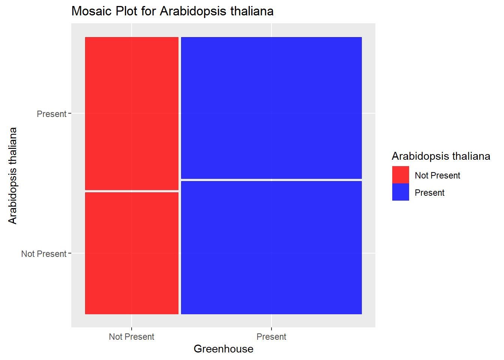
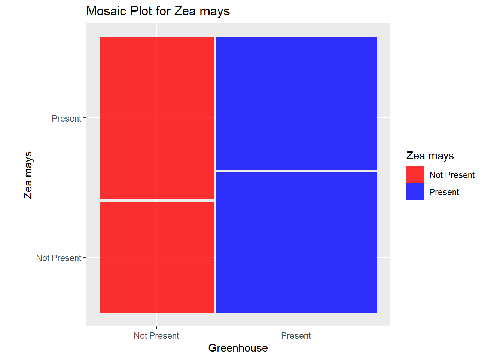
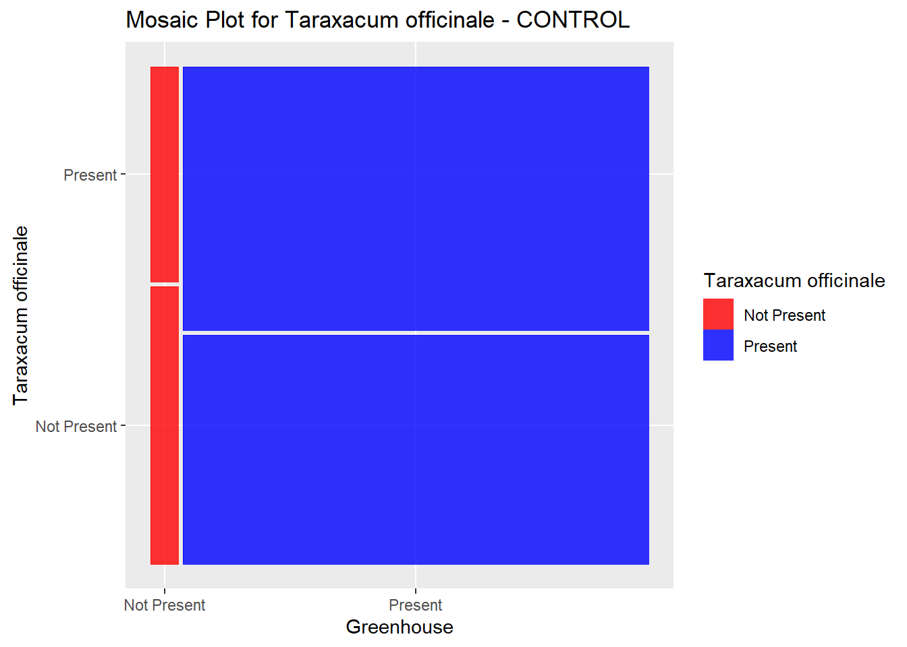
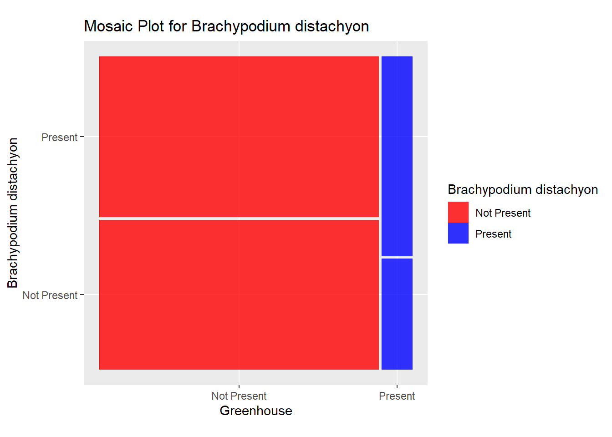
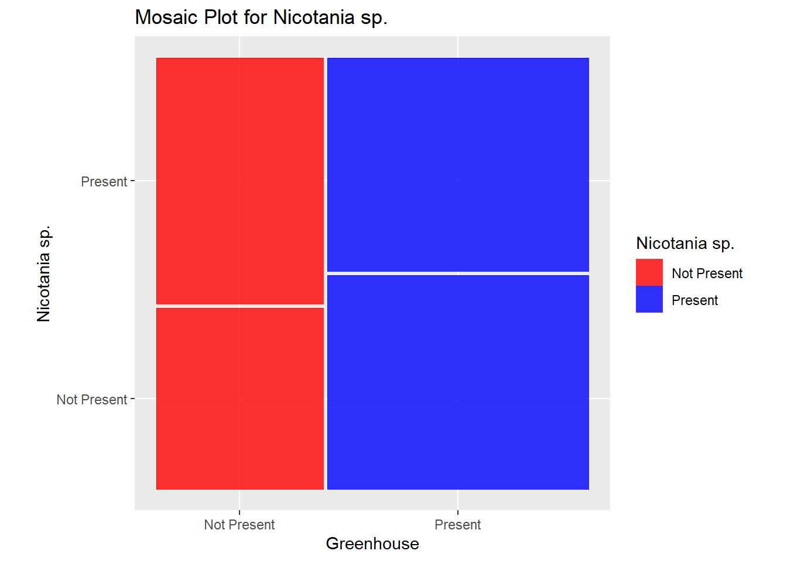
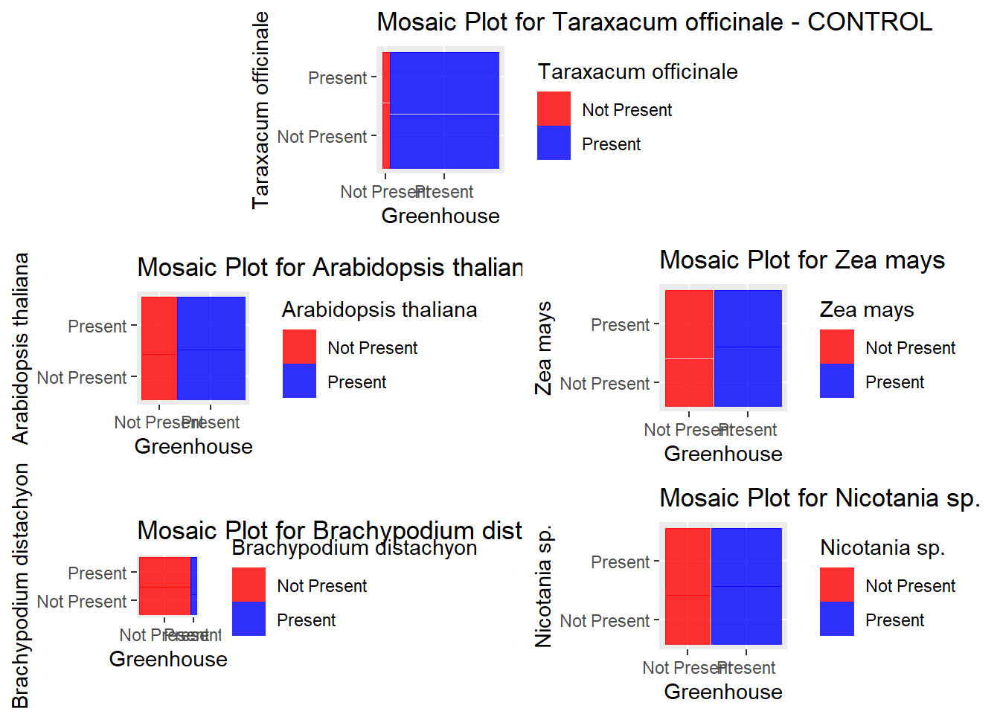

# read in datalibrary(readr)library(ggplot2)df <-read_csv("BIOL 494R Data Entry.csv", col_names =TRUE)# remove "County" after some county names in County and Sister Countydf$County <-sub(" County", "", df$County)df$`Sister County`<-sub(" County", "", df$`Sister County`)# make 'y' or 'n' capitalizeddf$`Research Greenhouse (Y/N)`<-toupper(df$`Research Greenhouse (Y/N)`)df$`Arabidopsis thaliana Present (Y/N)`<-toupper(df$`Arabidopsis thaliana Present (Y/N)`)df$`Zea mays Present (Y/N)`<-toupper(df$`Zea mays Present (Y/N)`)df$`Taraxacum officinale Present (Y/N)`<-toupper(df$`Taraxacum officinale Present (Y/N)`)df$`Brachypodium distachyon (Y/N)`<-toupper(df$`Brachypodium distachyon (Y/N)`)df$`Nicotania sp. (Y/N)`<-toupper(df$`Nicotania sp. (Y/N)`)df$`Model Researchers? (Y/N)`<-toupper(df$`Model Researchers? (Y/N)`)# make y and n 1 or 0columns_to_convert <-c('Research Greenhouse (Y/N)','Arabidopsis thaliana Present (Y/N)','Zea mays Present (Y/N)','Taraxacum officinale Present (Y/N)','Brachypodium distachyon (Y/N)','Nicotania sp. (Y/N)','Model Researchers? (Y/N)')# Loop through each column and convert "Y" to 1 and "N" to 0for (column in columns_to_convert) { df[, column] <-ifelse(df[, column] =="Y", 1, 0)}# Specify the relevant columnscolumns_to_check <-c("Arabidopsis thaliana Present (Y/N)", "Zea mays Present (Y/N)", "Taraxacum officinale Present (Y/N)", "Brachypodium distachyon (Y/N)", "Nicotania sp. (Y/N)")# Loop through the specified columnsfor (col in columns_to_check) { non_binary_rows <- df[df[[col]] !=0& df[[col]] !=1, ]if (nrow(non_binary_rows) >0) {cat("Non-binary values found in column:", col, "\n")print(non_binary_rows) } else {cat("No non-binary values found in column:", col, "\n") }}
No non-binary values found in column: Arabidopsis thaliana Present (Y/N)
No non-binary values found in column: Zea mays Present (Y/N)
No non-binary values found in column: Taraxacum officinale Present (Y/N)
No non-binary values found in column: Brachypodium distachyon (Y/N)
No non-binary values found in column: Nicotania sp. (Y/N)
Analysis
Create Mosaic Plots
## arabidopsis ####library(ggmosaic)library(ggplot2)# Create a data frame for the mosaic plota_mosaic_data <-data.frame(Greenhouse =factor(df$`Research Greenhouse (Y/N)`, labels =c("Not Present", "Present")),Arabidopsis =factor(df$`Arabidopsis thaliana Present (Y/N)`, labels =c("Not Present", "Present")))# Create the mosaic plotat <-ggplot(a_mosaic_data) +geom_mosaic(aes(x =product(Greenhouse, Arabidopsis), fill = Arabidopsis)) +scale_fill_manual(values =c("Not Present"="red", "Present"="blue"), name ="Arabidopsis thaliana") +labs(title ="Mosaic Plot for Arabidopsis thaliana") +coord_fixed(ratio =1) +xlab("Greenhouse") +ylab("Arabidopsis thaliana")plot(at)

## zea mays ####library(ggmosaic)library(ggplot2)# Create a data frame for the mosaic plotz_mosaic_data <-data.frame(Greenhouse =factor(df$`Research Greenhouse (Y/N)`, labels =c("Not Present", "Present")),Zea =factor(df$`Zea mays Present (Y/N)`, labels =c("Not Present", "Present")))# Create the mosaic plotzm <-ggplot(z_mosaic_data) +geom_mosaic(aes(x =product(Greenhouse, Zea), fill = Zea)) +scale_fill_manual(values =c("Not Present"="red", "Present"="blue"), name ="Zea mays") +labs(title ="Mosaic Plot for Zea mays") +coord_fixed(ratio =1) +xlab("Greenhouse") +ylab("Zea mays")plot(zm)

## taraxacum ####library(ggmosaic)library(ggplot2)# Create a data frame for the mosaic plott_mosaic_data <-data.frame(Greenhouse =factor(df$`Research Greenhouse (Y/N)`, labels =c("Not Present", "Present")),Taraxacum =factor(df$`Taraxacum officinale Present (Y/N)`, labels =c("Not Present", "Present")))# Create the mosaic plotto <-ggplot(t_mosaic_data) +geom_mosaic(aes(x =product(Greenhouse, Taraxacum), fill = Taraxacum)) +scale_fill_manual(values =c("Not Present"="red", "Present"="blue"), name ="Taraxacum officinale") +labs(title ="Mosaic Plot for Taraxacum officinale - CONTROL") +coord_fixed(ratio =1) +xlab("Greenhouse") +ylab("Taraxacum officinale")plot(to)

## Brachypodium distachyon ####library(ggmosaic)library(ggplot2)# Create a data frame for the mosaic plotb_mosaic_data <-data.frame(Greenhouse =factor(df$`Research Greenhouse (Y/N)`, labels =c("Not Present", "Present")),Brachy =factor(df$`Brachypodium distachyon (Y/N)`, labels =c("Not Present", "Present")))# Create the mosaic plotbd <-ggplot(b_mosaic_data) +geom_mosaic(aes(x =product(Greenhouse, Brachy), fill = Brachy)) +scale_fill_manual(values =c("Not Present"="red", "Present"="blue"), name ="Brachypodium distachyon") +labs(title ="Mosaic Plot for Brachypodium distachyon") +coord_fixed(ratio =1) +xlab("Greenhouse") +ylab("Brachypodium distachyon")plot(bd)

## Nicotania sp. ####library(ggmosaic)library(ggplot2)# Create a data frame for the mosaic plotn_mosaic_data <-data.frame(Greenhouse =factor(df$`Research Greenhouse (Y/N)`, labels =c("Not Present", "Present")),Nico =factor(df$`Nicotania sp. (Y/N)`, labels =c("Not Present", "Present")))# Create the mosaic plotns <-ggplot(n_mosaic_data) +geom_mosaic(aes(x =product(Greenhouse, Nico), fill = Nico)) +scale_fill_manual(values =c("Not Present"="red", "Present"="blue"), name ="Nicotania sp.") +labs(title ="Mosaic Plot for Nicotania sp.") +coord_fixed(ratio =1) +xlab("Greenhouse") +ylab("Nicotania sp.")plot(ns)

## combining plots ##### install.packages("gridExtra")library(gridExtra)# Arrange the plots in a 1x2x2 gridcombined_plots <-grid.arrange( to,arrangeGrob(at, zm, ncol =2),arrangeGrob(bd, ns, ncol =2),ncol =1,heights =c(0.35, 0.35, 0.35) # Set heights for the rows)

# Display the combined plotsprint(combined_plots)
TableGrob (3 x 1) "arrange": 3 grobs
z cells name grob
1 1 (1-1,1-1) arrange gtable[layout]
2 2 (2-2,1-1) arrange gtable[arrange]
3 3 (3-3,1-1) arrange gtable[arrange]
Chi-Squared Analysis
# Chi Squared ##### Create an empty data frame to store the resultschi_squared_results <-data.frame(Species =character(0), ChiSquaredStatistic =numeric(0), pValue =numeric(0))# Define the model organismsmodel_organisms <-c("Arabidopsis thaliana Present (Y/N)", "Zea mays Present (Y/N)", "Taraxacum officinale Present (Y/N)", "Brachypodium distachyon (Y/N)", "Nicotania sp. (Y/N)")# Loop through each model organism and perform the chi-squared testfor (organism in model_organisms) {# Create a contingency table contingency_table <-table(df$`Research Greenhouse (Y/N)`, df[[organism]])# Perform the chi-squared test chi_squared_test <-chisq.test(contingency_table)# Append the results to the data frame chi_squared_results <-rbind(chi_squared_results, data.frame(Species = organism, ChiSquaredStatistic = chi_squared_test$statistic, pValue = chi_squared_test$p.value))}# Print the table of chi-squared statistics for all speciesprint(chi_squared_results)
# Original p-value plotp_value_plot <-ggplot(chi_squared_results, aes(x = Species, y = pValue)) +geom_bar(stat ="identity", fill ="skyblue") +labs(title ="Chi-Squared Test Results for Species",x ="Species",y ="p-Value") +theme(axis.text.x =element_text(angle =45, hjust =1))# Add horizontal line at p=.05 p_value_plot +geom_hline(yintercept=.05, linetype="dashed", color ="red") +annotate("text", x =3, y = .04, label =".05", color="red", size=4)